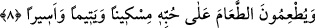

“fecrin intisârı; yâni sabah aydınlığının ufukta yayılması” anlamındadır. “Yayılmak”
anlamını ifâde etmede “istetâre” fiili sülâsi babdan “târe” fiilinden daha etkilidir; tıpkı
“sefere çıktı” anlamını ifâde etmede “istenfera” fiilinin “nefera” fiilinden daha etkili
olduğu gibi.
Kıyâmetin korkularına, yeri ve gökleri dolduracak derecede her yöreye yayılan
şiddetlerine -bunlar bizâtihi hikmet oldukları ve doğrunun ta kendisi bulundukları hâlde-
“şerr” denilmesi, bunların bu musîbetlere uğrayanlar açısından şerr ve kötülük
olmalarından dolayıdır. Ancak bu ifâde, o günün hayrının da aynı biçimde yeri ve
gökleri doldurmayacağı anlamına gelmez. Çünkü kıyâmet gününün zararlı ve şerr
olabilecek durumları olduğu gibi sevindirici ve sevinçli hâlleri de vardır.
Sehl (rh.) der ki: Belâ ve musîbetler âhirette herkesin başına gelir. Kınanma ise özel
olarak bâzı kimselerin başına gelir.
Öte yandan; “Onlar adaklarını yerine getirirler” ifâdesi, bu iyi kulların amellerini
beyân etmekte ve onların omuzlarında bulunan bütün yükümlülükleri yerine
getirdiklerini ifâde etmektedir. “Ve şiddeti her yere yayılmış olan bir günden
korkarlar” ifâdesi ise onların niyetlerini açığa vurmaktadır. Tâatlar ise ancak niyetlerle
tamam olur. Bu bakımdan onlar, öldükten sonra yeniden dirilme ve cezâ gününe
inanmakta ve bu günden çok korkmaktadırlar. İşte onlar, bu iki özelliği kendi
şahıslarında bir araya getirdikleri için Allah onlara “ebrâr” ismini vermiştir.
Âriflerden birisi buradan şu işâretleri çıkarmaktadır: Bu âyet-i kerîmede Allah Teâlâ
hak yolda sülûk erbâbı kullarına işâret ediyor ve onların taleplerine dikkat çekiyor.
Çünkü bu kimseler, kendi nefislerine çeşit çeşit riyâzatı, nefisle mücâhedeyi
yüklemişler, uykuyu terketmişler, açlıkla bedenlerini helâk etmişler, susuzlukla
ciğerlerini yakmışlardır. Bunlar başkalarının sözlerini duymamak için kulaklarını
ezanlarla doldurmuşlar, gerçek sevgiliden başkasını görmeyelim diye gözlerini
mâsivâya karşı kör etmişlerdir. Yine bunlar kalplerini, ezelî matlupları Allah’ın dışında
başka sevgilere karşı mühürlemişlerdir. Nefislerini, kalplerinin üzerini karanlık
durumlar istila etmesin diye Allah’ın kahır ve gazap sıfatının tecellî edeceği günden
korkutmuşlardır. İşte bu karanlık durumların kalbi istilâ etmesi ise şerrin en yüksek
zirvesidir. Bundan dolayı onlar, durmadan çalışıp çabalamışlardır; tâ ki Allah onları
korktuklarından kurtarsın ve emniyet ve güven içinde olan haremine dâhil eylesin.
8. Onlar, kendi canları çekmesine rağmen yemeği yoksula, yetime ve esire
yedirirler.
“Onlar kendi canları çekmesine” ve buna ihtiyaç duymalarına “rağmen yemeği
yoksula”; yâni hiçbir şeyi olmayan ve kazanmaktan âciz olan fakire, babası olmayıp